Aqua Vitae
Hope
Concrete
Black and White Autumn
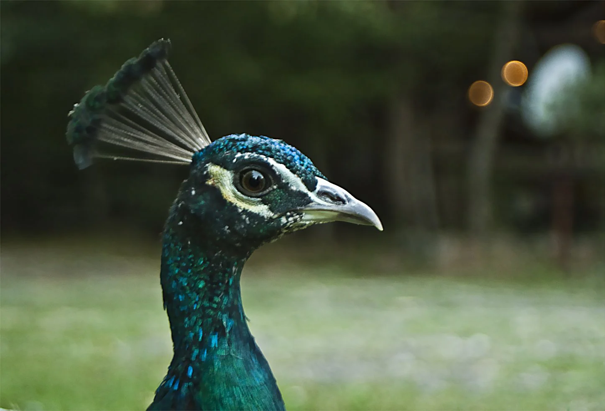
Lord
Maria Peneva - Lawyer
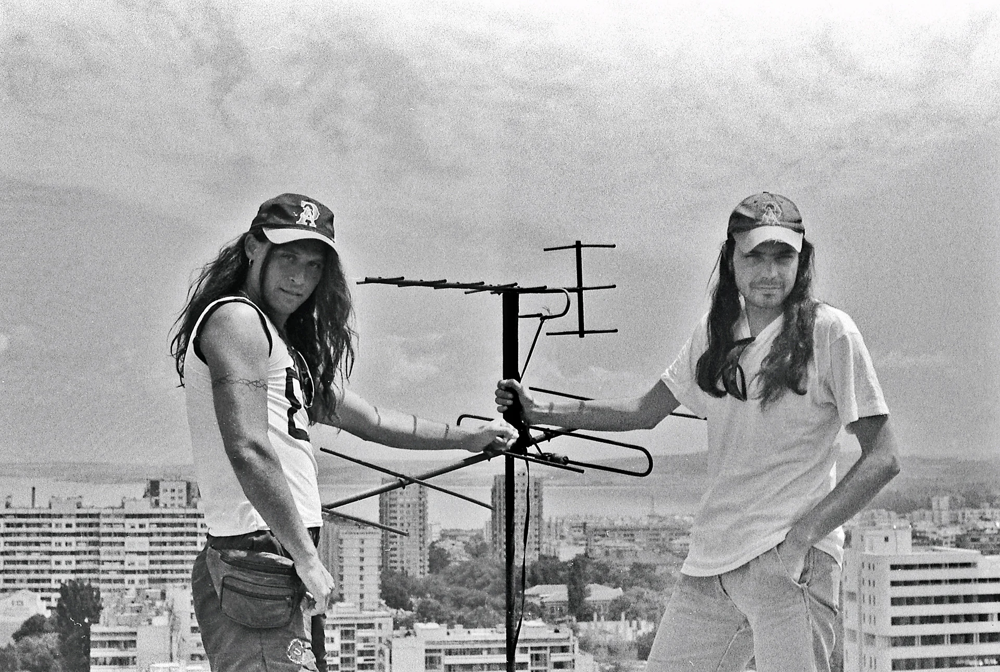
Carousel 1
Colorful Sullenness
The beautiful cook
Forest Pride
With tomato scent
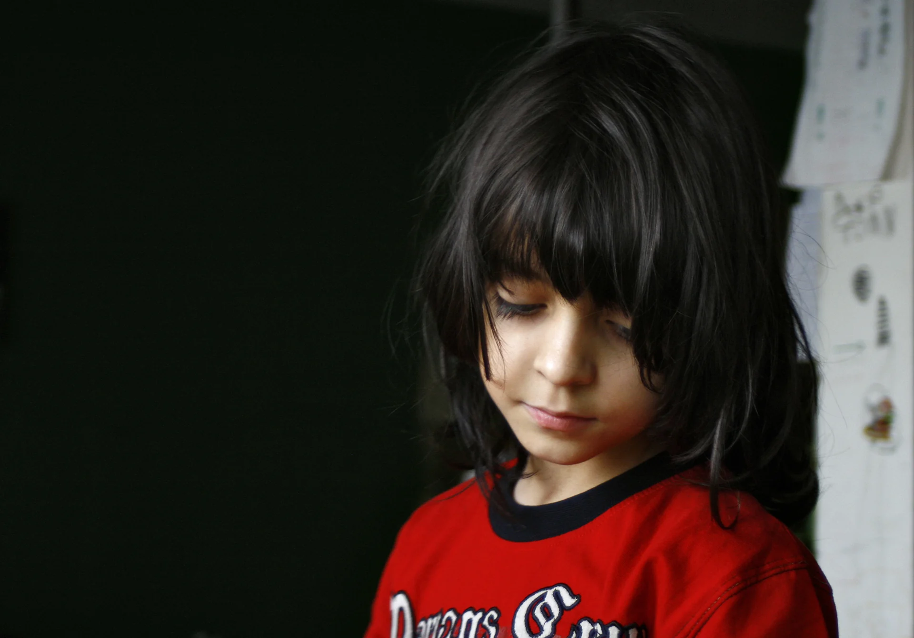
Big problem
Hello Grandma
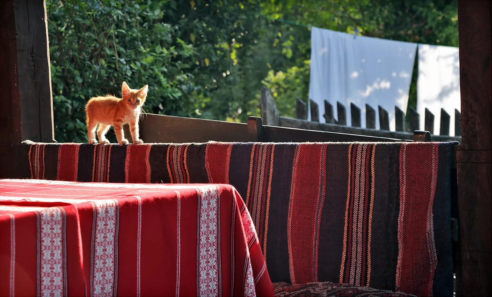
National treasure
Where Are You Going
Gulliver
No problem
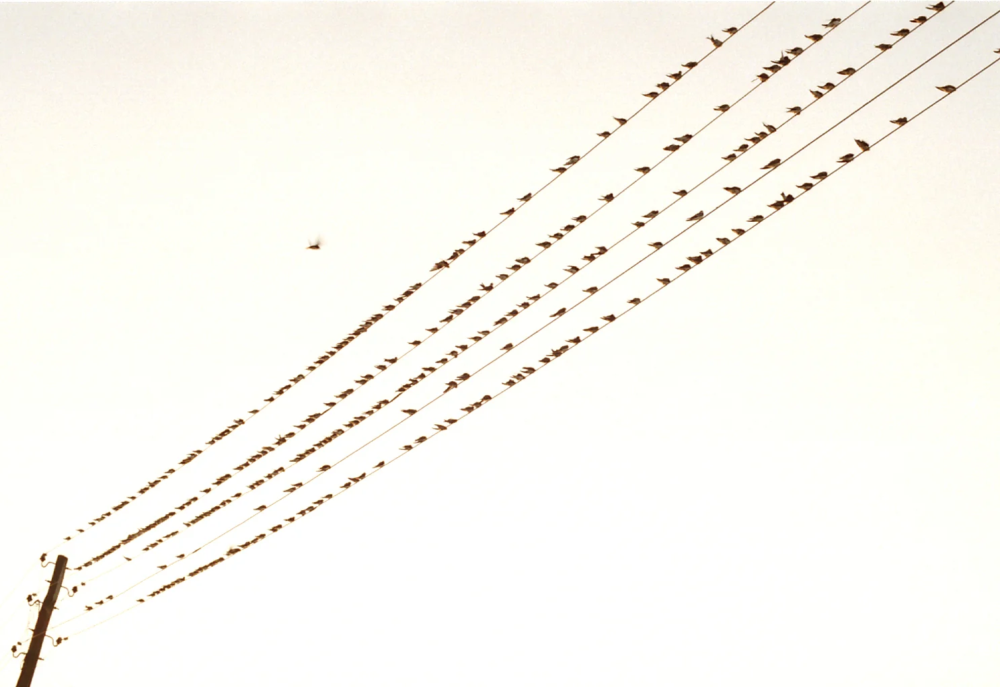
Melody of the morning
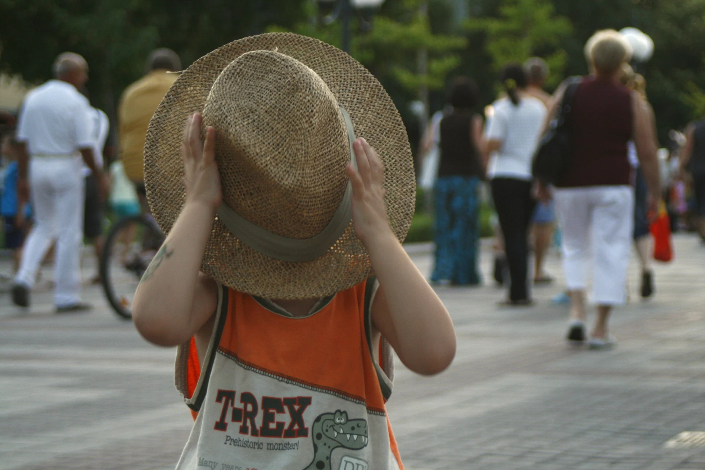
I Am Not Here
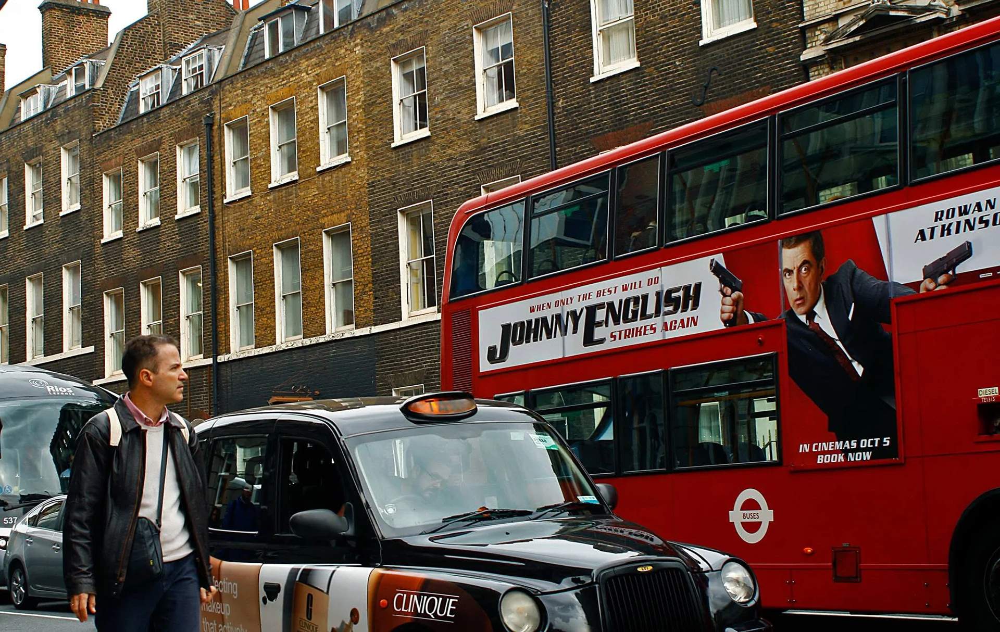
Jonny English
Yesterday
Healthy
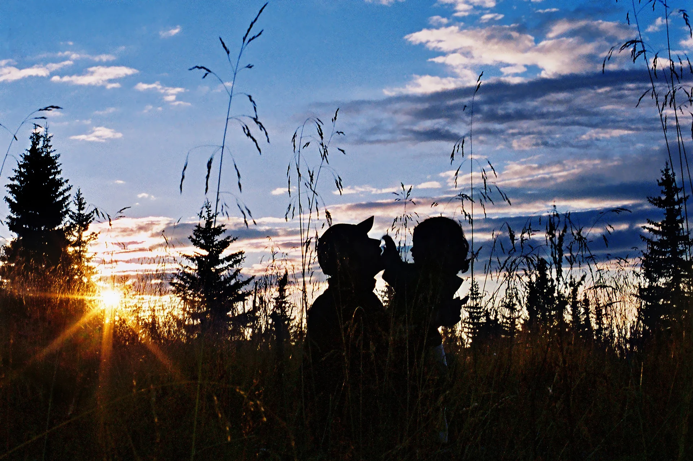
Close to the sun
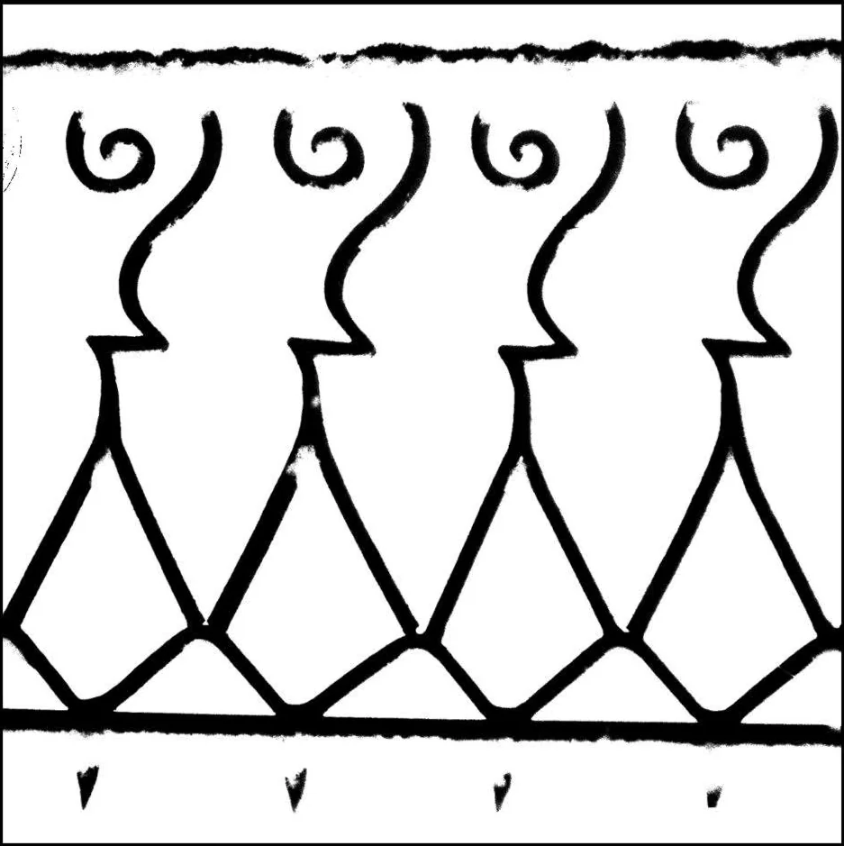
Snow Gentlemen
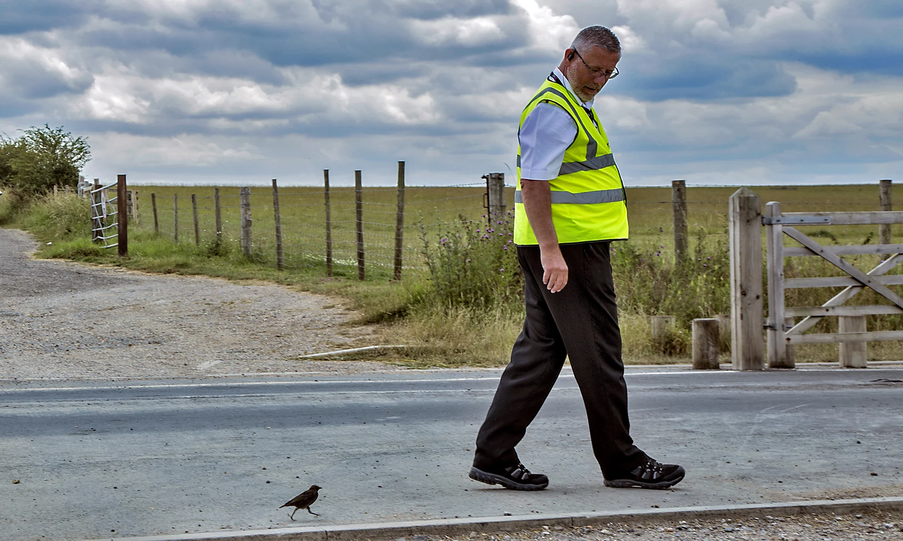
Friends
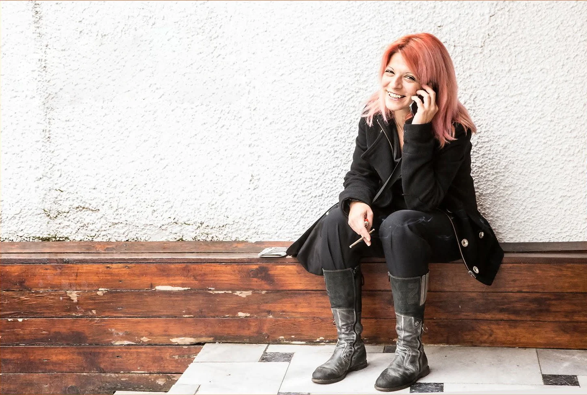
Virginia Dodova - Costume Designer
Window light
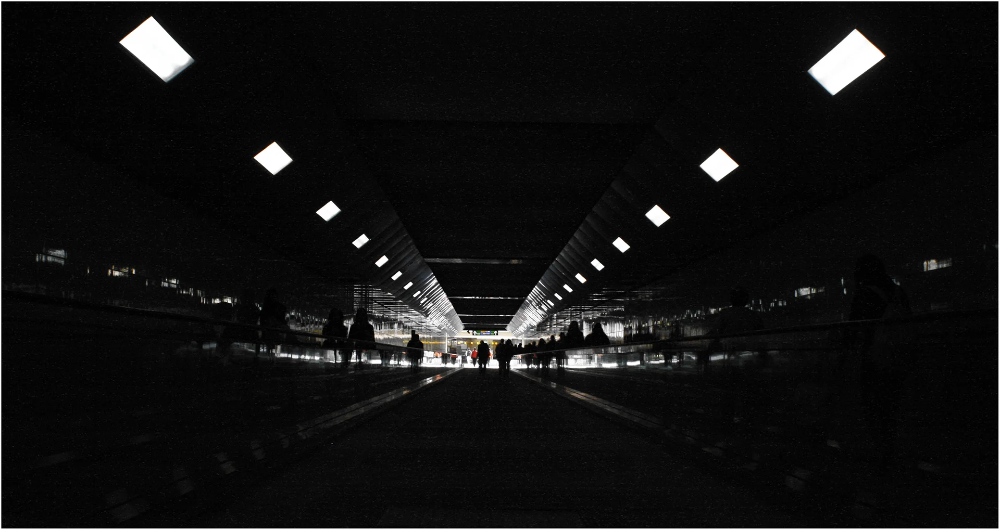
City Lights
Stairway to heaven
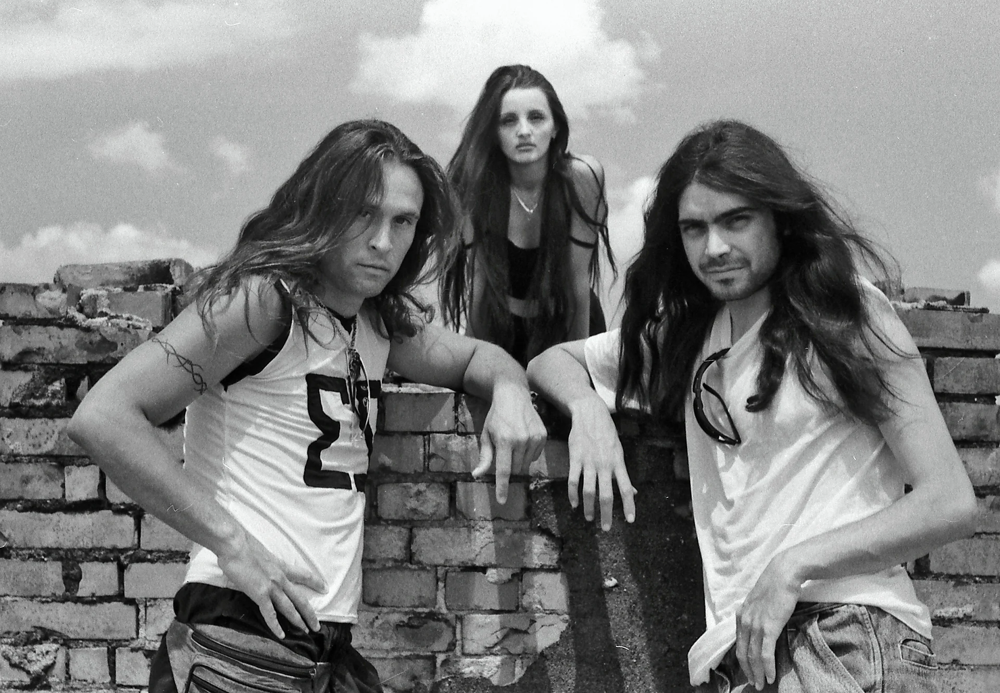
Carousel 2